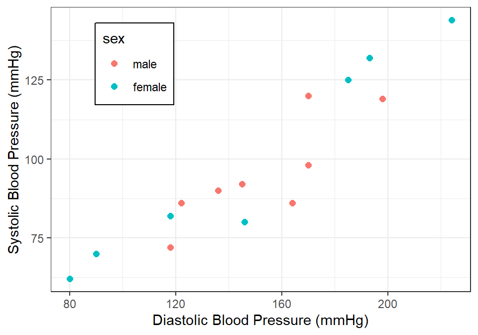
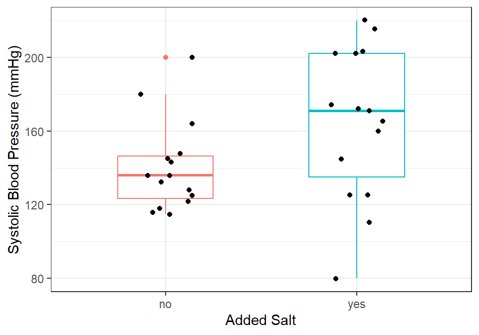
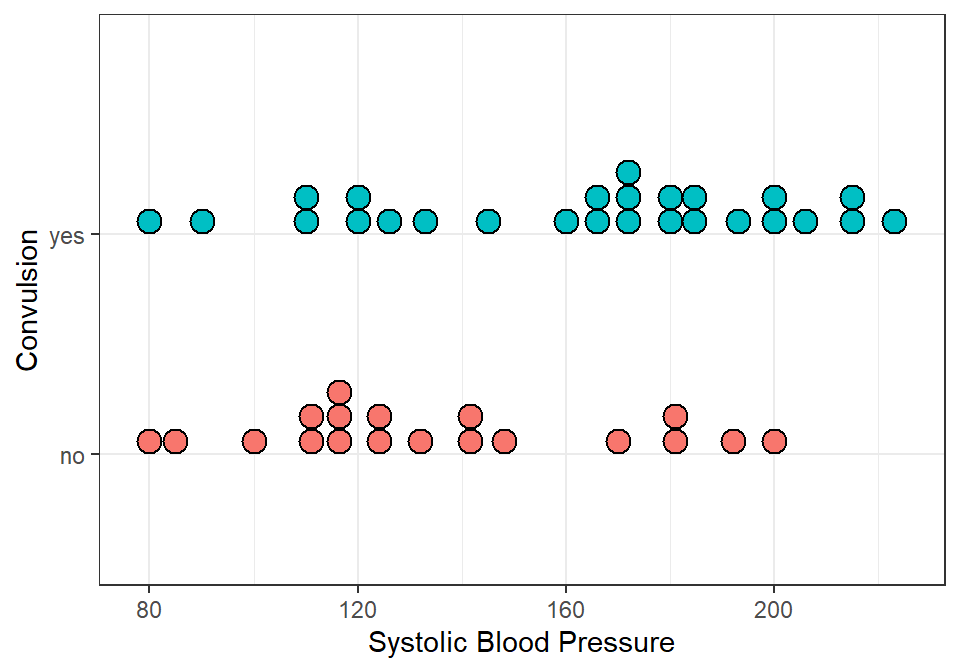

Special Post
Research
Data analysis
Sample Size
Small but Mighty: How To Analyse And Present Data When Your Study Population Is Small
“Even the small crocodile leaves its mark on the river.”
Introduction
They say size doesn’t matter, until you submit your thesis with only 30 patients, and your statistician looks at you the way a pediatrician looks at a child who swallowed a coin: concerned, but not entirely surprised.
In our regular series, we were dissecting the anatomy of a research proposal. Today, let’s take a detour into a common headache senior residents face: What to do when your study population is small.
In clinical research, we are taught that bigger is better. Larger sample sizes reduce error, increase statistical power, and make our findings more generalisable. But in the real world of paediatric research, especially in sub-Saharan Africa, we sometimes have to make do with small numbers. Rare conditions, resource limitations, or the simple reality of being a resident with a short training window can leave you staring at an Excel sheet with only 30 rows of data. Does this mean your study is doomed? Not at all. Small studies can still be rigorous, meaningful, and presentable in a fellowship thesis, if analysed and presented wisely. Let’s explore how to handle such data without losing credibility (or your sanity!).
What To Do…
Acknowledge the Limitations Upfront
The first rule of small sample size is honesty. You must clearly acknowledge that your study may lack statistical power and may be prone to Type II error (false negatives). This doesn’t invalidate the study, but it helps set expectations for reviewers and examiners.
Get This!
If you study neuroblastoma cases in a single centre and only get 28 eligible patients, that is not a weakness; it reflects the rarity of the condition.
Descriptive Statistics are Your Best Friend
When numbers are small, the data itself deserves to be shown. The general advice is:
- Use tables and graphs generously, as showing detail is the hallmark of reporting on small data.
- Use Counts and Percentages for categorical variables.
- Use Median and interquartile ranges (IQR) rather than means and standard deviations for continuous variables.
- When using figures, it’s better to use graphs that display individual data points, such as dotplots (@fig-three), scatterplots (Figure 1), boxplots with jitter (Figure 2), but not histograms.
Tip
Tip
Avoid drowning in percentages that exaggerate minor differences. Saying “2 out of 5 children (40%) could look way smaller in percentage terms compared to”3 out of 5 (60%)” when the numeric difference is only one!
Choose Statistical Tests Carefully
Many tests assume large samples and normal distributions. With a small sample size, those assumptions may not hold. Consider:
- Non-parametric tests:
- Mann–Whitney U test instead of the t-test.
- Fisher’s exact test instead of chi-square (especially when expected counts <5).
- Exact methods: Some software allows exact p-values that are valid for small samples.
- Effect sizes and confidence intervals: Even if p-values are non-significant, reporting effect sizes (e.g., odds ratios with wide CIs) is valuable.
- Multivariate regression has become an integral part of most fellowship theses, but it is not your friend when the sample size is small. Instead, discuss with your statistician if there is a need for regression. If so, a parsimonious approach is usually required, where not more than two covariates are included in the regression at a time. Alternative regression approaches are Penalized or Exact logistic regression. None of these, however, permits one to present the data as confirmatory and not exploratory.
- Other statistical analysis approaches may involve Bayesian methods, Simulation, and Bootstrapping. These are surely beyond the scope of this text.
Yes, I know. Statistics always makes you feel that cringe in your tummy, but hallelujah, you are still reading. 😃😃


Focus on Clinical Significance, Not Just p-values
With a small sample, statistical significance may be elusive. But clinical importance can still be evident.
Example
Imagine you are comparing two treatments for severe malaria. Out of 30 children, mortality was 4/15 in group A and 1/15 in group B. The Fisher’s exact test may not reach statistical significance. However, a relative risk of 0.25 is clinically meaningful and worth reporting with its often large confidence interval, with a note on limited power.
Use Visual Storytelling
Graphs are particularly powerful in small datasets. Consider:
- Dot plots or scatterplots: Show every patient, highlighting the individuality of small data (Figure 1).
- Box-and-whisker plots: To summarise distributions while showing variability. (Figure 2)
- Line plots: For repeated measures (e.g., weight or haemoglobin before and after intervention).
A simple, clean figure often speaks louder than a complex p-value.
Be Transparent in Reporting
Transparency builds trust. Always report:
- The actual numerator and denominator (“7 out of 30”), not just percentages.
- Any missing data and how you handled them.
- Whether you used one-tailed or two-tailed tests (this will be explained in subsequent blogs).
Reviewers are less likely to criticise your small sample if you show integrity in how you present it.
In Conclusions
The golden rule: do not overstate findings. Avoid sweeping claims like “Treatment X is superior to…” or “females were significantly more likely to…” Instead, say:
“In this small cohort, Treatment X was associated with lower mortality. Larger studies are needed to confirm this finding.”
This shows maturity, and examiners will respect your caution.
Summary
Working with small samples is common in paediatric fellowship research. While such studies may lack power, they can still provide valuable insights if analysed carefully. Focus on descriptive statistics, use non-parametric tests, highlight effect sizes, present your data visually, and above all, be transparent. When your sample is small, don’t panic. Clarity, honesty, and creativity can transform 30 rows of data into a credible and meaningful thesis chapter.
So yes, size matters, but presentation matters more. After all, even a small bowl of jollof can make you happy if it’s well-cooked. 🍲 See you soon!
References
- Faber J, Fonseca LM. How sample size influences research outcomes. Dental Press J Orthod. 2014;19(4):27–9. PMID: 25279518
- Hackshaw A. Small studies: strengths and limitations. Eur Respir J. 2008;32(5):1141–3. PMID: 18978131
- Lydersen S, Fagerland MW, Laake P. Recommended tests for association in 2×2 tables. Stat Med. 2009;28(7):1159–75. PMID: 19170020